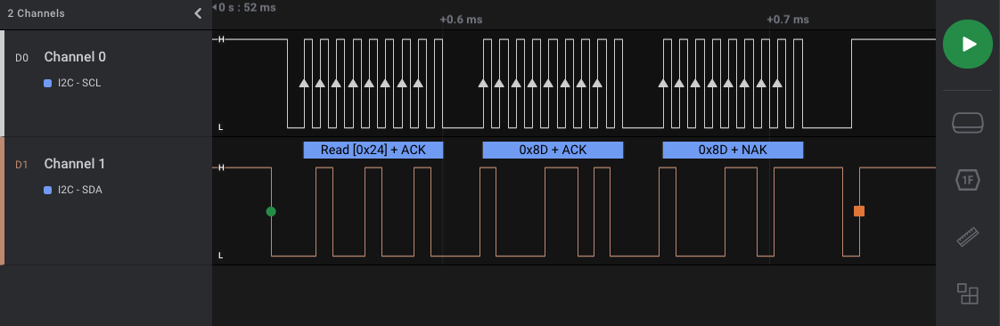
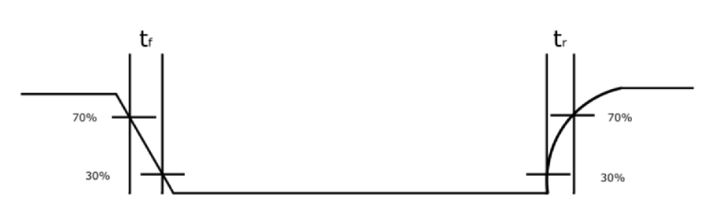

B-B.3.4 I2C 调试工具与故障排查¶
所属章节：第五部 B. 总线协议 > B-B.3 I2C 总线
难度：[I] Intermediate | 预计阅读时间：50 分钟
本节导读¶
面对一笔失败的 I2C 访问，本节只回答一个问题：怎样把“我想读什么”“内核实际做了什么”“线上实际发生了什么”对齐，从而知道下一步该查哪一层？
全篇使用同一笔受控实验：RK3568 的 /dev/i2c-1 接有一片 AT24C02，7 位设备地址为 0x50，从内部偏移 0x10 读取 4 字节，预期内容是 Hell：
AT24C02 是带 I2C 接口的 EEPROM，即掉电后仍能保存数据的小容量存储器。0x50 用来选择总线上的芯片，0x10 用来选择芯片内部的存储位置，二者不是同一种地址。设备地址、重复 START 和 i2c_msg 的原理分别见 B-B.3.2、B-B.3.3；本篇负责把命令、完整用户程序、内核路径、trace 和仪器证据接起来。
🔴 先确认这是一片允许做实验的器件。
i2cdetect、i2cdump、i2cget、i2cset和i2ctransfer都可能改变器件状态，并非绝对安全的“只读工具”。-y只跳过交互确认，-f才绕过忙设备检查；后者可能扰乱内核驱动，本文不使用它。验证边界。 本篇以 Linux v6.6 和 i2c-tools v4.4 源码为核对基准。命令输出、trace 和仪器序列均为依据官方源码构造的预期示例，不是 RK3568 上板实录。原创 C 程序与 trace 脚本尚未在目标板编译、运行；交互实验室是源码模型，不连接真实硬件。
先确认总线与占用，不要拿扫描当万能枚举¶
/dev/i2c-1 是否就是原理图上的 I2C1¶
设备树别名、控制器注册顺序和动态加入的 USB 适配器都可能影响编号。先用 i2c-tools 列出适配器并查询能力：
-l 列出总线编号和适配器名称，用来把命令中的 1 对回具体控制器。-F 查询适配器能力；主实例需要普通 I2C 消息传输，对应能力位 I2C_FUNC_I2C。这个宏的值为 0x00000001，表示适配器提供 master_xfer() 所需的普通 I2C 能力，不是“总线上存在一个地址为 1 的设备”。
/dev/i2c-N 由 i2c-dev 字符设备接口提供。若设备文件不存在，应检查内核是否启用 CONFIG_I2C_CHARDEV 以及对应模块是否加载；若编号不符，应回查设备树别名和注册信息，不能逐个总线盲目扫描。
扫描输出中的 50、--、UU 分别是什么¶
确认目标适配器后，才可按器件风险决定是否扫描：
下面是依据 v4.4 手册构造的格式示例，只表达 0x50 有应答，不是实测：
0 1 2 3 4 5 6 7 8 9 a b c d e f
00: -- -- -- -- -- -- -- --
10: -- -- -- -- -- -- -- -- -- -- -- -- -- -- -- --
20: -- -- -- -- -- -- -- -- -- -- -- -- -- -- -- --
30: -- -- -- -- -- -- -- -- -- -- -- -- -- -- -- --
40: -- -- -- -- -- -- -- -- -- -- -- -- -- -- -- --
50: 50 -- -- -- -- -- -- -- -- -- -- -- -- -- -- --
60: -- -- -- -- -- -- -- -- -- -- -- -- -- -- -- --
70: -- -- -- -- -- -- -- --
行首是地址高 4 位，列名是低 4 位，所以 50: 行与 0 列相交即 0x50。默认范围是 0x08 至 0x77，因此第一行前八格留空。格子的含义必须分开：
- 十六进制数字：该地址对本次探测作出了应答，但不能据此识别芯片型号；
--：工具执行了探测而没有收到应答，可能涉及地址、供电、接线或器件状态；UU：工具跳过探测，因为该地址已绑定内核驱动。它暗示内核知道这里有一颗设备，不等于刚刚收到线上 ACK。
I2C 没有通用的无损枚举命令。i2cdetect 借用 SMBus Quick Write 或 Receive Byte 探测；SMBus 的固定事务格式见 B-B.3.6。-q 强制 Quick Write，官方手册列出其损坏 AT24RF08 EEPROM 的案例；-r 强制 Receive Byte，也有使某些只写器件总线异常的案例。两者都不是通用的“更温和”开关。未知器件应先查手册，必要时用首尾地址参数缩小范围，而不是扩大访问。
UU 出现时，两个访问者怎样相遇¶
假设另一块实验板的 1-0050 已由 at24 驱动绑定。sysfs 是内核导出设备与驱动关系的虚拟文件系统，可用下面两条命令确认：
1-0050 由适配器号 1 和四位十六进制地址 0050 组成。name 是设备名称属性，cat 读取并打印它；driver 是指向已绑定驱动的符号链接，readlink 读出链接目标。若没有绑定驱动，后一条命令不会给出有效驱动路径。
此时按顺序推演两个参与者：
- at24 驱动持有设备模型创建的正式
i2c_client，维护 EEPROM 访问状态。 - 用户进程打开
/dev/i2c-1，得到另一个匿名 client，并没有接管 at24 的对象。 - i2c-tools 默认先执行
ioctl(fd, I2C_SLAVE, 0x50)检查占用。fd是本次打开得到的文件描述符，I2C_SLAVE给匿名 client 设置目标地址；v6.6 的i2cdev_ioctl()发现该地址已绑定时返回-EBUSY，不会执行后续I2C_RDWR。 - 用户态
ioctl()把内核负错误码转换成-1，并设置errno；工具据此拒绝访问，i2cdetect则显示UU。所以UU不是 NACK。
若用 -f 或 I2C_SLAVE_FORCE 绕过检查，Core 仍能让每笔总线传输排队，却不知道 AT24C02 的内部偏移和 at24 驱动的业务状态。两个访问者仍可能交叉修改器件状态。受控调试应先停止正常业务，再按 B-B.3.5 处理测试器件绑定；产品运行时不把强制访问当并发方案。
同一笔读取：命令、消息和线上字节怎样对应¶
固定事务够用时用 i2cget¶
只读主实例的第一个字节，可以写：
最后的 0x10 是器件内部地址。未指定模式时，i2cget 默认执行 SMBus Read Byte Data：先写命令字，再通过重复 START 读 1 字节。对 AT24C02 而言，命令字就是存储偏移，所以这个固定事务恰好符合随机读一字节的时序。若该处预先保存 0x48，预期输出为：
0x48 是读回数据，不是函数返回值，也不能证明后续三个地址的内容。适合 SMBus Word Data 的器件可在末尾加 w，但其字节顺序和事务格式已经固定；若器件手册规定另一套 16 位帧格式，不能靠读后交换字节补救。
需要明确消息组合时用 i2ctransfer¶
主实例需要一次读 4 字节，因此使用：
v4.4 tools/i2ctransfer.c:202-278 逐个解析描述符，333-352 再提交并打印。参数与两条消息一一对应：
w1@0x50：向 7 位地址0x50写 1 字节；后面的0x10是这条消息的数据；r4：读 4 字节，省略@地址就沿用前一条消息的0x50；- 两个描述符合在一次
I2C_RDWR中，中间是重复 START，不是 STOP 后再开一笔传输。
若偏移 0x10 至 0x13 已保存 ASCII 字符 Hell，H/e/l/l 分别编码为十六进制 48/65/6c/6c，预期输出是：
每条读消息在标准输出中单独占一行，写消息默认不打印。echo $? 可查看上一条 shell 命令的退出状态：0 表示工具报告成功，非 0 表示失败。它不能替代后面的内核返回值和 trace。
i2ctransfer 的优势是可自定义消息数量、方向和长度，并非它独占了重复 START。选择依据始终是器件手册规定的线上事务。
i2cdump 与 i2cset 为什么必须后退一步¶
对已知按字节随机读没有副作用的实验 AT24C02，可以限制范围查看局部内容：
这里 -r 是 i2cdump 的寄存器范围选项，与 i2cdetect -r 不是同一含义；b 表示逐字节读取。预期格式示例为：
0 1 2 3 4 5 6 7 8 9 a b c d e f
00: ff ff ff ff ff ff ff ff ff ff ff ff ff ff ff ff
10: 48 65 6c 6c 6f 00 ff ff ff ff ff ff ff ff ff ff
此时行首和列名表示器件内部地址，不是总线设备地址。10: 行前四项与主实例一致，可作为第二份用户态证据。但 FIFO 会在读取后弹出数据，有些状态寄存器读取后会清零，未知器件不能照搬。
i2cset -y 1 0x50 0x10 0x5a 会改写偏移 0x10 并触发 EEPROM 内部写周期，不再是只读验证。写入等待、读回比较和页边界属于 B-B.3.5，本篇不修改主实例的数据基线。
不用现成工具：完整 C 程序怎样复现同一笔读取¶
先看清用户态与内核之间的两个结构体¶
Linux UAPI 是用户态与内核共同遵守的二进制接口定义。主实例使用 <linux/i2c.h> 中的 struct i2c_msg，以及 <linux/i2c-dev.h> 中的 struct i2c_rdwr_ioctl_data。字段保留 v6.6 定义，注释说明本次赋什么值：
struct i2c_msg {
__u16 addr; // 7 位设备地址，本例为 0x50
__u16 flags; // 方向与特殊选项；普通写为 0，读带 I2C_M_RD
__u16 len; // 本消息的数据字节数，本例分别为 1 和 4
__u8 *buf; // 用户态数据缓冲区；进入内核后会被复制
};
#define I2C_M_RD 0x0001 // 数据方向为从设备到主设备
struct i2c_rdwr_ioctl_data {
struct i2c_msg __user *msgs; // 指向用户态消息数组
__u32 nmsgs; // 数组项数，本例为 2
};
__u16、__u32、__u8 是接口约定宽度的无符号整数类型；__user 标记该指针指向用户态地址，内核不能直接把它当普通内核指针解引用。I2C_RDWR 是命令号 0x0707，语义是“把整组消息作为一次传输执行，只在末尾 STOP”。
完整程序从哪里来，怎样构建和运行¶
本篇原创文件 i2c-rdwr-read.c 不依赖 i2c-tools 库，只使用 Linux 系统调用和上述 UAPI 头文件。它保存于本篇 code/B-B.3.4/，在已安装对应头文件的 Linux 构建环境中编译，再到具有 /dev/i2c-1 的目标系统运行；不是内核模块，也不应在 MkDocs 所在 Windows 主机上直接访问板卡。
同目录 Makefile 把构建命令集中起来：
make clean
make CC=aarch64-linux-gnu-gcc
# 将生成的 i2c-rdwr-read 部署到目标板后执行：
./i2c-rdwr-read 1 0x50 0x10
三个参数依次是总线号、7 位地址和单字节内部偏移。程序固定读 4 字节，避免把本篇主线扩成通用寄存器工具。当前环境的 PATH 中未找到 aarch64-linux-gnu-gcc、gcc 或 clang，所以这里给出的是构建与运行方法，不是已成功执行的记录。
消息初始化与提交：每一行怎样落到主实例¶
下面是完整 main() 中从准备消息到判断结果的核心段。它前面已经解析参数、打开设备并查询 I2C_FUNC_I2C；完整参数检查、所有错误出口和 close() 都在同一文件中，不另造一份简化副本。
/* 与 i2ctransfer 默认行为一致：先拒绝已由内核驱动占用的地址。 */
if (ioctl(fd, I2C_SLAVE, address) < 0) {
fprintf(stderr, "选择地址 0x%02lx 失败：%s\n", address,
strerror(errno));
goto out;
}
write_buf[0] = (unsigned char)offset;
memset(msgs, 0, sizeof(msgs));
msgs[0].addr = (__u16)address;
msgs[0].flags = 0;
msgs[0].len = sizeof(write_buf);
msgs[0].buf = write_buf;
msgs[1].addr = (__u16)address;
msgs[1].flags = I2C_M_RD;
msgs[1].len = sizeof(read_buf);
msgs[1].buf = read_buf;
rdwr.msgs = msgs;
rdwr.nmsgs = 2;
ret = ioctl(fd, I2C_RDWR, &rdwr);
if (ret < 0) {
fprintf(stderr, "I2C_RDWR 失败：%s\n", strerror(errno));
goto out;
}
if (ret != 2) {
fprintf(stderr, "事务不完整：只完成 %d/2 条消息，丢弃读缓冲区\n", ret);
goto out;
}
printf("offset 0x%02lx:", offset);
for (i = 0; i < READ_LENGTH; i++)
printf(" 0x%02x", read_buf[i]);
putchar('\n');
I2C_SLAVE 在这里先完成默认占用检查；真正的 I2C_RDWR 仍从每个 msgs[i].addr 取地址。memset() 把整个消息数组清零，避免未初始化标志进入内核。write_buf[0] 接收偏移 0x10，第一条消息长度因此为 1；read_buf 是 4 字节数组，第二条消息带 I2C_M_RD，长度因此为 4。rdwr.nmsgs = 2 表示提交两条消息，不表示“读 2 字节”。
ioctl() 的用户态返回口径必须与内核内部返回值分开：内核返回负错误码时，libc 让 ioctl() 返回 -1 并把错误号放入 errno，strerror(errno) 把它转成可读文本；成功或部分完成时，ret 是完成的消息数。只有 ret == 2 才打印缓冲区，ret < 0 和其他非负值都进入失败出口。goto out 汇到同一个 close()，避免不同分支忘记关闭文件。
主实例成功时，完整程序的预期输出为：
若地址已绑定，I2C_SLAVE 失败并打印 Device or resource busy；若控制器返回错误，I2C_RDWR 失败并打印对应错误文本；若只完成 1 条消息，程序明确报告 1/2 并丢弃读缓冲区。这三种情况都不能打印 Hell 冒充成功。
跟入内核：匿名 client、缓冲区和返回值怎样变化¶
打开文件时创建什么，关闭时销毁什么¶
v6.6 drivers/i2c/i2c-dev.c:585-624 给出一次打开文件的对象生命周期：
- 系统初始化时，控制器驱动已经注册
i2c_adapter，它代表一条可访问总线。运行命令不会重新创建控制器。 i2cdev_open()先用i2c_get_adapter(minor)按设备次编号取得适配器引用，再用kzalloc()分配并清零一个匿名i2c_client。client->adapter = adap建立“本次打开属于哪条总线”的关系，file->private_data = client把对象挂到这次打开文件上。- 这个匿名 client 只保存本次用户态访问的寻址状态，不会注册成新的
1-0050，也不会与外设驱动匹配。主实例每条消息已经带地址，因此传输本身不依赖 client 中另存一份地址。 i2cdev_release()在关闭文件时执行i2c_put_adapter()放下适配器引用，kfree(client)释放匿名对象，再把file->private_data置空。它不会注销适配器，也不销毁设备树创建的正式 client。
因此，“每次命令创建的匿名 client”和“系统启动时创建的正式设备对象”属于两条不同生命周期。用户态扫描不会向系统注册一颗新硬件。
I2C_RDWR 先复制参数，再复制每条消息的数据¶
i2cdev_ioctl() 在 :434-458 处理 I2C_RDWR：先用 copy_from_user() 复制 rdwr_arg，检查消息指针非空、数量非 0 且不超过 I2C_RDWR_IOCTL_MAX_MSGS（v6.6 为 42），再用 memdup_user() 复制消息数组。它随后调用 i2cdev_ioctl_rdwr()，后者继续处理数据缓冲区：
res = 0;
for (i = 0; i < nmsgs; i++) {
if (msgs[i].len > 8192) {
res = -EINVAL;
break;
}
data_ptrs[i] = (u8 __user *)msgs[i].buf;
msgs[i].buf = memdup_user(data_ptrs[i], msgs[i].len);
if (IS_ERR(msgs[i].buf)) {
res = PTR_ERR(msgs[i].buf);
break;
}
/* memdup_user allocates with GFP_KERNEL, so DMA is ok */
msgs[i].flags |= I2C_M_DMA_SAFE;
}
data_ptrs 是动态分配的数组，逐项保存原始用户缓冲区地址。memdup_user() 分配内核内存并复制用户数据，返回错误指针时，IS_ERR() 识别错误、PTR_ERR() 取出负错误码。成功后，msgs[i].buf 已改为内核缓冲区，原用户地址只留在 data_ptrs[i]。I2C_M_DMA_SAFE 表示该缓冲区可用于 DMA；DMA 是控制器不依赖 CPU 逐字节搬运数据的直接内存访问方式。主实例两条消息各复制一次，长度 1 和 4 都远低于单消息 8192 字节上限。
参数或内存检查失败时，:288-295 释放已经建立的缓冲区、data_ptrs 和消息数组后返回，尚未进入总线传输。
Core 持锁执行两条消息，控制器返回完成数¶
i2c_transfer() 位于 drivers/i2c/i2c-core-base.c:2254-2288。它先确认 adap->algo->master_xfer 存在，再通过 __i2c_lock_bus_helper() 取得适配器锁，调用 __i2c_transfer()，最后用 i2c_unlock_bus() 解锁。adap 是当前适配器，algo 是控制器注册的操作集合，master_xfer() 是普通 I2C 消息执行入口。
__i2c_transfer() 在 :2207-2235 先为每条消息记录 trace_i2c_write() 或 trace_i2c_read()，再调用 master_xfer()。主实例在 RK3568 上最终进入 i2c-rk3x.c 注册的控制器实现；寄存器细节属于 B-B.3.3，本篇只要求它返回“完成消息数或负错误码”。总线锁避免两笔软件传输在同一适配器上交错，但不理解 EEPROM 内部偏移，因此不能替代前面的占用协调。
控制器返回后，Core 只为已完成且属于读方向的消息记录 trace_i2c_reply()，再记录 trace_i2c_result()。主实例提交 2 条消息，因此判断口径是：
- 返回 2：两条消息都完成，4 字节读缓冲区才可使用；
- 返回负值：传输失败，负值是内核错误码；
- 返回其他非负值：预期事务未完整完成，不能把缓冲区当完整结果。
读数据怎样回到用户态，EFAULT 为什么不代表没发总线¶
i2cdev_ioctl_rdwr() 的返回与清理路径必须和前面的复制一起看：
res = i2c_transfer(client->adapter, msgs, nmsgs);
while (i-- > 0) {
if (res >= 0 && (msgs[i].flags & I2C_M_RD)) {
if (copy_to_user(data_ptrs[i], msgs[i].buf,
msgs[i].len))
res = -EFAULT;
}
kfree(msgs[i].buf);
}
kfree(data_ptrs);
kfree(msgs);
return res;
res 先保存 Core 的传输结果。只有 res >= 0 且消息带 I2C_M_RD 时，copy_to_user() 才把内核读缓冲区复制回 data_ptrs[i] 指向的用户地址；写消息不需要回写。随后每条消息的内核缓冲区都被 kfree() 释放，最后释放指针数组和消息数组。
若 copy_to_user() 失败，res 被改为 -EFAULT，表示用户缓冲区访问错误。此时硬件事务已经执行过，可能只是结果无法送回用户态；不能把 -EFAULT 翻译成“设备没有应答”。若 Core 已返回负值，则跳过读数据回写但仍释放所有内存。若 Core 返回短计数，例如 1，当前源码会在 res >= 0 条件下回写读消息，因此用户程序仍必须再检查 ret == 2，不能因“内存里有几个字节”就接受结果。
交互跟随：同一步同时看代码、对象与返回值¶
下面的实验室把正常路径拆成“组织消息—打开—复制—持锁—执行—返回—回写—打印—关闭”。还可切换地址占用、NACK、短事务和 EFAULT，观察哪些步骤被跳过、哪些清理仍必须发生。
在新窗口打开 i2c-dev Lab。步骤片段、完整函数和源码工作台读取同目录保存的 v6.6／v4.4 快照；它们是依据源码构造的模型，不证明硬件已经运行。
用 tracepoint 把软件消息与返回值对齐¶
用户态输出只能证明工具最终报告了什么。tracepoint 是内核在固定位置预留的观测点；启用后，事件进入跟踪缓冲区，不需要为本次观察修改外设驱动。v6.6 的 include/trace/events/i2c.h 定义四类事件：i2c_write、i2c_read 在控制器执行前记录请求，i2c_reply 在控制器返回后记录已完成读消息，i2c_result 记录整组结果。
用自动收尾脚本，而不是忘记关闭 trace_pipe¶
tracefs 是导出跟踪开关和缓冲区的虚拟文件系统，常见路径为 /sys/kernel/tracing 或 /sys/kernel/debug/tracing。本篇原创 trace-i2c-read.sh 自动寻找可写的 I2C 事件开关，保存原状态，清旧记录，执行主命令，停止记录并打印当前缓冲区；退出或收到中断时通过 trap 恢复原开关，同时保留主命令退出状态。
printf '0\n' > tracing_on
: > trace
printf '1\n' > events/i2c/enable
printf '1\n' > tracing_on
i2ctransfer -y 1 w1@0x50 0x10 r4
command_status=$?
printf '0\n' > tracing_on
cat trace
exit "$command_status" # trap 0 在退出时恢复原开关
运行前需要 root 权限、已挂载 tracefs 和已安装的 i2ctransfer。tracing_on 控制是否记录，: > trace 清空旧缓冲区，events/i2c/enable 一次控制整组 I2C 事件。脚本已在本机通过 bash -n 语法检查，但本机没有目标 tracefs，尚未实际执行。
四个事件逐字段对回主实例¶
成功时，事件载荷应是下面的结构。以下省略 CPU、进程和时间戳前缀，是依据 v6.6 TP_printk 格式构造的预期示例：
i2c_write: i2c-1 #0 a=050 f=0000 l=1 [10]
i2c_read: i2c-1 #1 a=050 f=0001 l=4
i2c_reply: i2c-1 #1 a=050 f=0001 l=4 [48 65 6c 6c]
i2c_result: i2c-1 n=2 ret=2
#0、#1：消息在本次传输中的零起始序号，分别对应写偏移和读数据；a=050：消息的 7 位设备地址，不包含方向位；f=0000：写消息没有读标志；f=0001：读消息带I2C_M_RD；l=1、l=4：消息长度，单位为字节；- 方括号：写请求数据或读回复数据，
10是偏移，48 65 6c 6c是读回内容； n=2：本次提交两条消息；ret=2：控制器报告两条均完成。
这组事件与终端输出形成闭环：终端得到 4 字节，trace 证明它们来自 i2c-1 上地址 0x50 的第 1 条读消息，整笔返回值又是 2。若 ret < 0，负值是内核错误码；若出现其他非负值，则事务未完整执行。NACK 是否定应答，-EIO 是通用输入输出错误；不同控制器对 NACK、超时等结果的错误码映射可能不同，不能把所有 -EIO 都直接翻译成同一硬件根因。
tracepoint 位于软件请求与控制器执行之间，不能证明 SDA/SCL 的实际电平，也不会自动给出业务层调用原因。要认定某次访问来自哪个程序，应先停止无关访问，再用受控命令复现，不能只凭时间相近的一条事件认定调用者。
dmesg 与动态调试只补充已有日志¶
dmesg 读取内核日志环形缓冲区，适合查看驱动主动报告的错误：
grep -Ei 按不区分大小写的扩展正则过滤日志。没有匹配行不等于没有故障：普通 NACK、应用传错地址或 compatible 不匹配，并不保证每个驱动都会打印直接原因。compatible 是设备树描述兼容型号的字符串，Core 用它匹配外设驱动。
动态调试可以打开源码中已有的 pr_debug()、dev_dbg() 打印点，但不能凭空生成逐笔消息记录：
echo 'file i2c-core-base.c +p' > /sys/kernel/debug/dynamic_debug/control
# 观察结束后恢复：
echo 'file i2c-core-base.c -p' > /sys/kernel/debug/dynamic_debug/control
+p 启用匹配文件的打印，-p 关闭。动态调试需要相应内核配置和 debugfs 支持，输出是否进入当前控制台还受日志级别影响；逐笔消息仍以前面的 tracepoint 为主。
仪器只回答软件证据答不了的问题¶
终端和 trace 已表明软件提交正确，但线上仍失败时，才把观察点移到引脚。逻辑分析仪回答“协议帧走到哪里”，示波器回答“电压与时间是否满足要求”，二者不能互相替代。
逻辑分析仪：事务是否按协议走完¶
逻辑分析仪按数字阈值记录高低电平，并把 SDA、SCL 解码为 I2C 事件。连接时必须让仪器与板卡共地，确认通道耐压和板上电平匹配。采样率要足以分辨当前 SCL 与边沿，具体取值结合仪器手册确定；对 400 kHz 总线选择数 MHz 采样只是起点，不是保证解码正确的通用定律。

图 1：Saleae 官方软件解码示例，不是本篇 AT24C02 抓包。绿色圆点表示 START，橙色方块表示 STOP；默认地址按 7 位显示。图片来源于 Saleae《I2C Analyzer - User Guide》，用于说明解码器界面和标记。
若仪器支持协议触发，应把 START 或目标地址作为条件。单独的“SDA 下降沿”不必然是 START，因为普通数据位也会在 SCL 低电平期间下降；真正的 START 要求 SCL 为高时 SDA 从高变低。若只能边沿触发，先采集完整流量，再通过解码器定位主实例。
主实例成功时，解码序列应与软件两条消息逐段对应：
S → 0xA0 + ACK → 0x10 + ACK → Sr
→ 0xA1 + ACK
→ 0x48 + ACK → 0x65 + ACK → 0x6c + ACK → 0x6c + NACK
→ P
S 是 START，Sr 是重复 START，P 是 STOP。把 7 位地址 0x50 左移一位，最低位填 0 得到写方向地址字节 0xA0，填 1 得到读方向地址字节 0xA1。ACK 是肯定应答；前三个读数据字节后由主设备回 ACK，表示继续读取。最后一个字节后由主设备回 NACK，表示已经读够，随后 STOP。这个末尾 NACK 是正常收尾，不是故障。
抓包把失败位置进一步缩小：
0xA0后就 NACK：设备没有在寻址阶段应答，先查地址、供电、连接和器件是否可用；- 地址已 ACK，写
0x10后 NACK：设备已被选中，但没有接受当前偏移或当前状态不允许访问，应查手册和器件状态； - 地址、偏移、重复 START 和数据都完整，但数值不对：通信帧已经成立，应查内部地址、数据解释和其他访问者；
- SCL 低电平在某拍明显延长：可能是从设备时钟延展，应对照器件允许的处理时间和控制器超时，不设统一“数毫秒”阈值。
若软件 trace 成功而抓包不同，还要确认二者捕获的是否同一笔事务，以及总线上是否有其他主设备或访问者。证据必须先对齐，再谈矛盾。
示波器：电平与边沿是否满足器件要求¶
逻辑分析仪把电压转换成 0 和 1 后，可能掩盖缓慢上升、低电平偏高、毛刺和振铃。毛刺是短暂异常跳变，振铃是边沿后逐渐衰减的来回振荡；示波器保留电压随时间变化的形态，适合解释“协议偶尔解错”背后的电气原因。

图 2：tr 是从 30% 到 70% 的上升时间，tf 是从 70% 到 30% 的下降时间。图片来源于 Analog Devices《I2C Timing: Definition and Specification Guide (Part 2)》Figure 2，是定义示意，不是本篇实测波形。
测量时让总线保持实际通信负载，分别观察 SDA、SCL，并使用短接地连接降低探头引入的额外振铃。判读围绕四个量展开：
- 上升时间。 按图示 30% 至 70% 口径测量，再与当前速率档和器件手册比较。Fast-mode（快速模式，最高 400 kHz）常见的上升时间上限是 300 ns；超标时回查上拉电阻与总线电容，而不是只看协议解码。
- 低电平幅度。 第 9 拍 ACK 是否真正进入接收方的低电平识别范围。上拉过小会让低电平驱动端承担过大电流，驱动能力不足或异常争用也可能使低电平抬高。
- 高电平幅度与稳定时间。 稳定高电平偏低应检查供电、漏电或异常争用；上拉过大首先表现为上升缓慢，两者不要混为同一根因。
- 毛刺与振铃。 重点看 SCL 高电平期间的 SDA 异常跳变，因为它可能被识别成 START 或 STOP。探头引入的假象也要通过缩短接地和改变测点排除。
降低总线速率可以作为对照实验：若降速后错误消失，说明问题与时序或电气裕量相关，但降速本身不等于完成根因修复。上拉、电容和速率的重新核算回到 B-B.3.1。
若总线已经卡死，还要先分清谁拉住哪根线。SDA 因异常中断的读传输而保持低电平时，可按 B-B.3.2 的机制尝试补时钟并补 STOP；SCL 被设备持续拉低时，补 SCL 时钟本身无法解决，需要检查器件复位、供电和控制器恢复能力。
回到主实例：让每个证据改变下一步¶
扫描显示 UU。 工具跳过了线上探测。先查 sysfs 绑定关系，再把内核驱动和用户进程视为两个独立访问者处理；不能把 UU 当成设备无应答，也不能直接强制访问。
扫描显示 --，trace 在寻址后返回负错误码，抓包看到 0xA0 后 NACK。 三类证据都指向寻址未成功，接下来核对地址引脚、供电、接线和器件状态。即使读缓冲区全为 0xff，也只是结果表象，不能反过来证明“数据帧无应答”。
trace 显示两条请求及 ret=2，抓包也有完整地址和重复 START，但读数不对。 软件传输和协议帧均已成立，应比较 i2cdump 的局部内容、器件手册和实际数据顺序。全 0xff 可能意味着 SDA 在读取期间一直保持高，也可能是该位置本来就保存 0xff，必须结合初始化内容和波形区分。
同一命令偶发失败，软件参数每次相同。 用 trace 对齐失败传输，用逻辑分析仪确认失败发生在哪一拍，再用示波器检查对应时段的边沿和电平。只有完成这层对应，才能把“偶发”落实到协议位置或电气条件，而不是直接更换上拉电阻。
这套方法不要求机械执行固定数量的命令，而要求每一步都改变证据状态：确认适配器后排除错误总线，解释 UU 后排除错误占用判断，对齐消息后排除错误事务，读取返回值后排除假成功，最后才用仪器检查协议和电气。
本节总结¶
I2C 排障的关键是把同一笔事务在不同层的证据对齐：命令行说明想做什么，完整 C 程序明确消息和成功判据，i2c-dev 与 Core 说明实际提交及返回，tracepoint 给出消息、数据和完成数，逻辑分析仪确认线上时序，示波器再解释数字协议无法呈现的电气质量。UU、NACK、全 0xff 和偶发失败都只是证据起点，不能单独承担根因结论。
本篇完成了命令和内核路径的机制验证方法；设备树、at24 驱动、sysfs EEPROM 读写、页写和写周期属于 B-B.3.5 的系统集成。源码与官方手册已经核对，trace 脚本通过 Shell 语法检查；C 程序未编译，所有命令、脚本、trace 和仪器流程均未在本篇环境中运行或上板验证。
本节自查¶
Q1. 为什么主实例必须同时检查 ret < 0、ret != 2 和最终四字节，而不能只看命令是否打印？
ret < 0 表示用户态 ioctl() 失败，应继续看 errno；非负返回值表示完成的消息数，主实例必须恰好为 2。只有满足这个条件，程序才打印 4 字节。终端文本、返回值和 trace 必须指向同一结论，否则可能把短事务或残留缓冲区误认为成功。
Q2. 打开 /dev/i2c-1 后创建的匿名 client 与 at24 的正式 client 有何不同？UU 时二者分别怎样行动？
匿名 client 由 i2cdev_open() 为当前打开文件分配，挂在 file->private_data 上，不注册进设备模型；正式 client 由 Core 根据硬件描述创建并绑定 at24。用户工具默认执行 I2C_SLAVE 时，内核发现正式设备已绑定就返回 -EBUSY，工具停止；at24 继续持有自己的对象。UU 表示跳过探测，不是 NACK。
Q3. data_ptrs、msgs[i].buf 和 copy_to_user() 在一次读取中各承担什么角色？为什么 EFAULT 时硬件可能已经执行？
data_ptrs[i] 保存原始用户缓冲区地址，memdup_user() 后 msgs[i].buf 改指内核副本，Core 和控制器只使用内核缓冲区。传输返回后，copy_to_user() 把读消息复制回用户地址。若这一步失败，结果变为 -EFAULT，但 i2c_transfer() 已经调用过控制器，所以不能说总线未执行；清理路径仍会释放内核内存。
Q4. 主实例的 trace 中 #/a/f/l/n/ret 怎样证明操作完整？短事务时为什么不能只看有没有读数据？
#0/#1 是写、读序号，a=050 是 7 位地址，f=0000/0001 区分写和读，l=1/4 是消息字节数，n=2 是提交数，ret=2 才是两条均完成。短计数仍可能留下部分数据，v6.6 在非负结果下还会回写读消息；调用者必须按预期消息数拒绝不完整结果。
Q5. i2cget 与 i2ctransfer 都能产生重复 START，应依据什么选择？
i2cget 默认的 SMBus Read Byte Data 已包含“写命令字、重复 START、读一字节”；i2ctransfer 允许显式组合多条消息。器件事务符合固定 SMBus 格式时用前者更直接，需要自定义消息数量、方向或长度时用后者。选择依据是器件手册，不是命令长短。
Q6. 为什么 i2cdetect -q、-r 和 i2cdump 不能作为未知器件的默认安全动作？
I2C 没有通用无损探测。Quick Write 和 Receive Byte 对特定器件都可能产生副作用，两种强制模式均有官方风险案例；i2cdump 会连续访问内部地址，对 FIFO、读取清状态或无寄存器器件可能改变状态。未知器件应先查手册并限制范围。
Q7. 逻辑分析仪与示波器分别能把主实例缩小到哪类问题？
逻辑分析仪验证 START、地址、重复 START、数据和 ACK/NACK，能指出寻址失败、偏移未接受或末尾正常 NACK等协议位置；示波器验证 30%/70% 上升时间、电平、毛刺和振铃，能解释偶发解码错误背后的电气裕量。二者都不能单独说明软件为什么组织出这笔事务，需要与命令和 trace 对齐。
Q8. 本篇哪些结论已经核验，哪些仍需上板？
命令语义、UAPI 字段、对象生命周期、缓冲区复制、返回口径和 trace 格式已对照 Linux v6.6 与 i2c-tools v4.4 源码；Shell 脚本通过语法检查，图片来自 Saleae 与 Analog Devices 官方资料。C 程序尚未编译，脚本和命令尚未在目标 Linux 运行，AT24C02 数据、trace、逻辑分析仪和示波器结果均未上板验证。